Features and Usage
all fatures and usages are for running this app on CAVE2 if not noticed otherwise
Start
- Once the app is running, there will be a female voice asking you to wait while program loading data
- Once the app is loaded, there will be a 48 small multiples on two sides of the screen (24 each side)
- A solar system will be running in the center of the displays
- A simple 3D universe will be rotating at the upper-right corner of the center
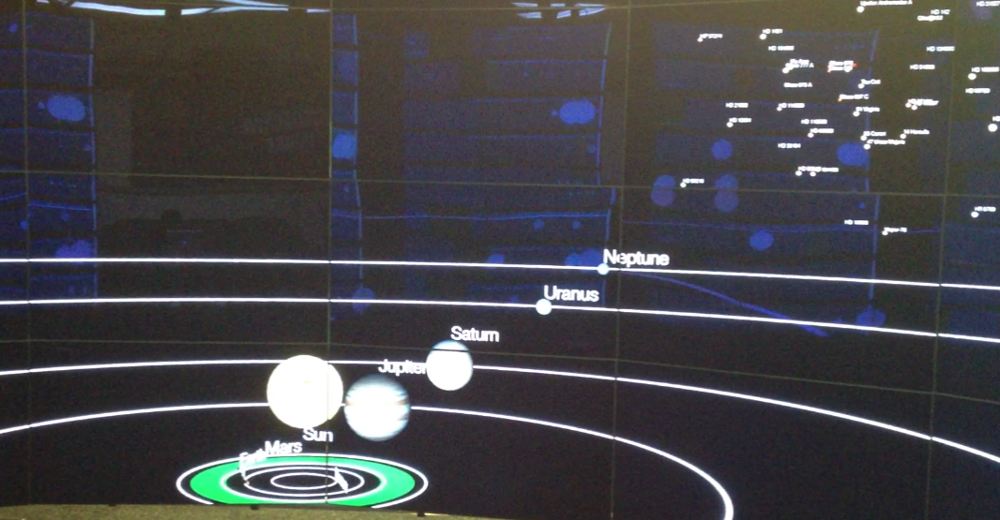
The Small Multiples
- There are at most 48 small multiples at the same time, each representing a planetary system
- Our solar system will always be at the first one (unless reordered manually. See below)
- Information about each system displayed includes system name, star name (different from system name if it is a binary or trinary system), star type, distance to us, detection method, and an optional discovery indicator that highlights some (4) systems that related to recent scientific discoveries, such systems will have red text
- The relative sizes and distances of planets are scaled correctly
- The planets and stars are textured with appropriate textures (See data page)
- Potential habitable zone is showed in green. Earth-sized planets in it, as well as large planets may have moons in it, are highlighted with red text, are highlighted by coloring their names in red
- If a system is either a binary system or a trinary system, it is highlighted with orange text and the actual type is displayed
- If some planets (or stars) in a system are too far away to be displayed, an indicator will be shown
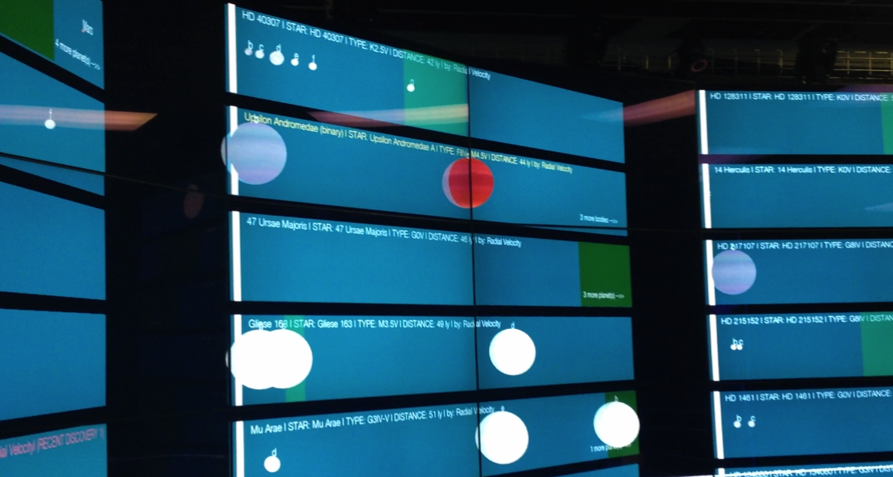
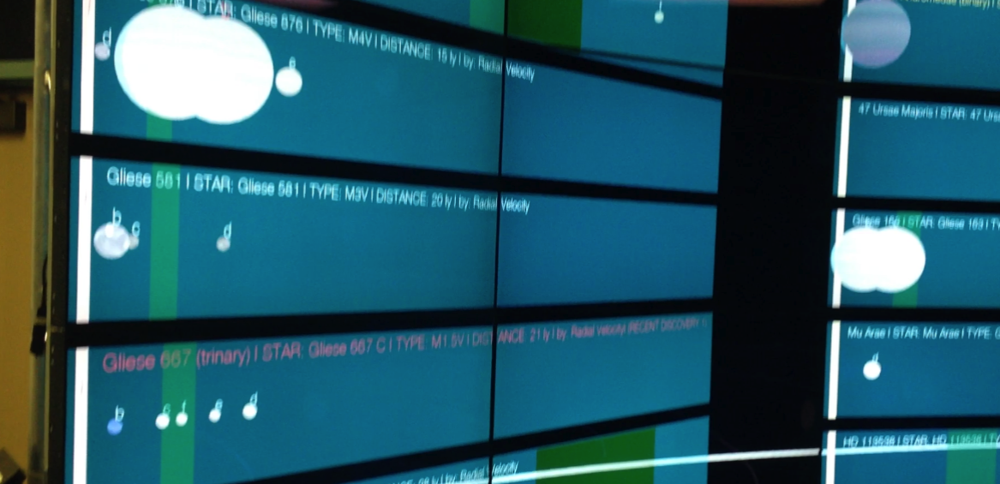
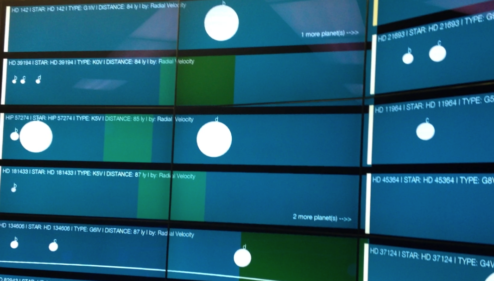
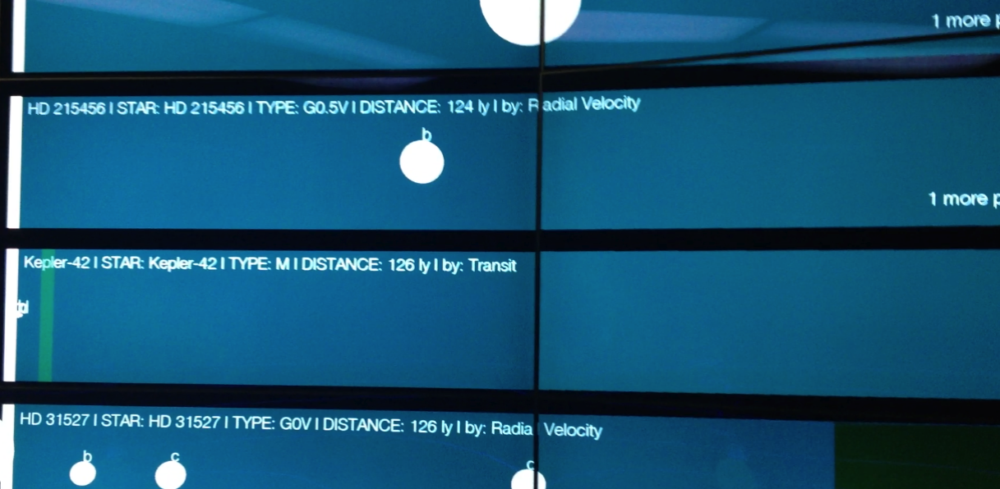
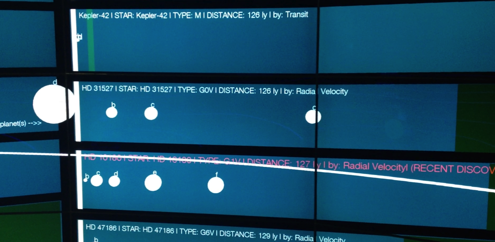
The Center System
- By default a 3D solar system will be running in the center.
- The relative sizes and distances between the Sun and eight planets are scaled as they are
- The orbit is in an estimate circle with a radius that equals to the semi-major axis of the actual orbit
- The relative speeds of orbiting and rotating are scaled correctly. And the rotation is with correct inclination
- The Sun and planets are textured using appropriate texture
The 3D universe
- The 3D universe shows relative position and distance between all the systems that currently being showed as small multiples
- Our Sun has been highlighted with red text, and is generally in the center of the visualization
- For different sets of systems, the scale factor of this 3D universe varies
- The stars are colored based on their types (OBAFGKE) (See data page)
- Sizes of stars are scaled with square root (means 1:2 on actual radius will become 1:1.41 in this visualization)
Navigation
- Use the wand to navigate. Keep Button7 down and move the wand. The camera will transform exactly as your wand moves (translation and rotation). Tip: try to move wand slowly at first (Yes, the same navigation as my previous project)
- If you lost yourself in the universe, can call for the menu (by pressing Button2) and select 'reset the scene'. You'll be home
- The 3D universe and the small multiples will remain where they are. Navigation only works for the center system
Tip: keep the wand pointing to a star and move it (e.g. translating right while rotating left), you can orbit the star like a planet
Changing Scale Factors (distance/size/time)
- Use ButtonLeft and ButtonRight to change distance scale factor
- Use ButtonUp and ButtonDown to change size scale factor
- All the three scale factors are also available in the menu
- The scale factors (distance and size) reflect on both the center system and the small multiples
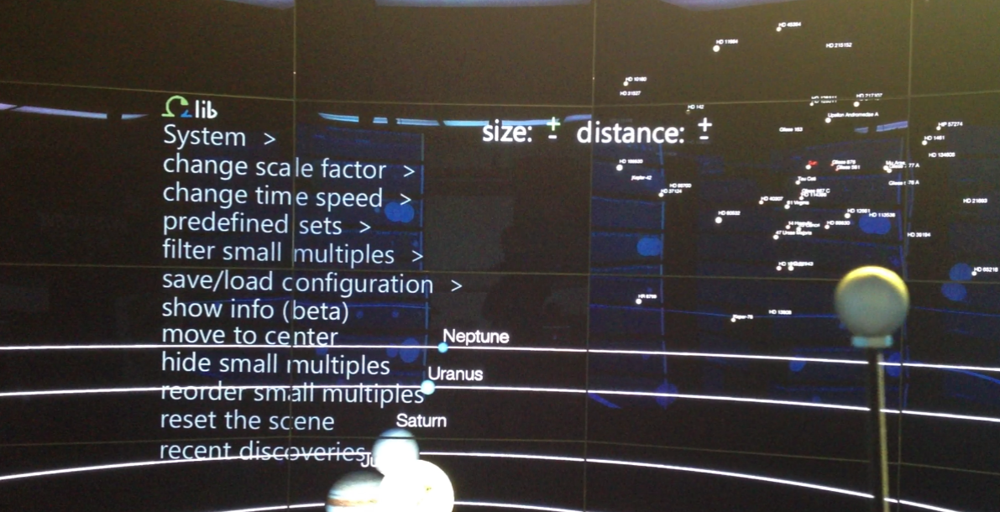
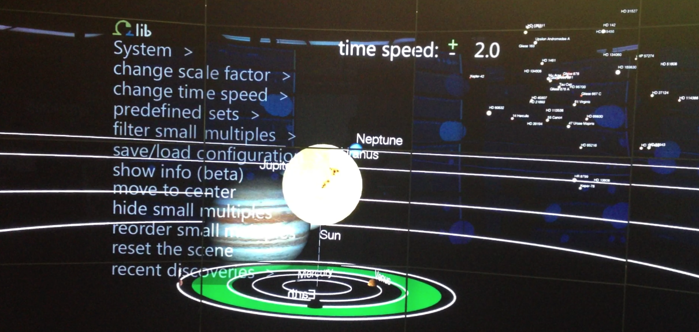
Showing Different Systems
- Four pre-chosen interesting sets of planetary system are available in the menu
- They are: nearest; farthest; G type; most planets (We have 94 planetary systems in total, see data page)
- Also available is an interactive filter. You can select what to show based on type of star, distance to us and number of planets. Note that results may have less than 48 systems
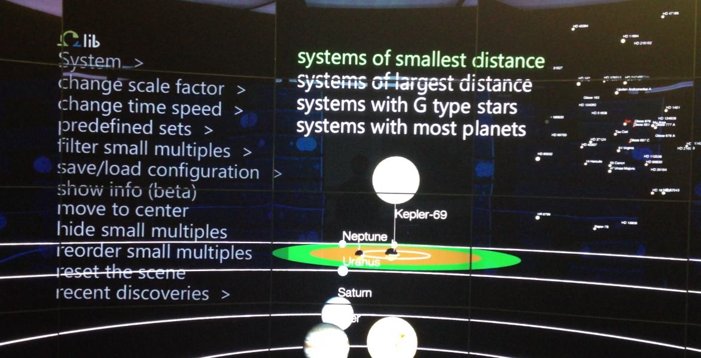
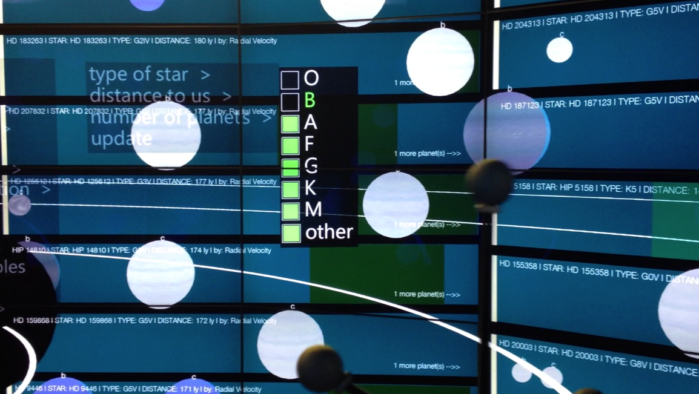
Adding System to Center
- Use the menu option 'move to center' to enter moving mode
- You will see an orange pointer on the wall. Move it around and select a system as the female voice guides you
- Press Button3 to cancel, Button2 to select. There will be voice responses as feedback to keep you knowing what status you are in
- The selected system will be displayed above the Solar system in the center with the same scale factor for comparison
- The name of the selected system will be highlighted with red text in the 3D universe Note 1: There are three different multi-star systems in my data. 1) part of a binary system (5), where planets orbit around one of the two stars (and the other star is orbiting around this star too), 2) circumbinary system (2), where planets orbit around both stars, and 3) trinary system (1), where are three stars. Currently only the visualization of the first type is available
Showing More Information of System
- Use the menu option 'show info (beta)' to show detailed data with error margins about the system that is currently running in the center
- If information about the system is not available, an image saying 'no info' will be showed (See data page)
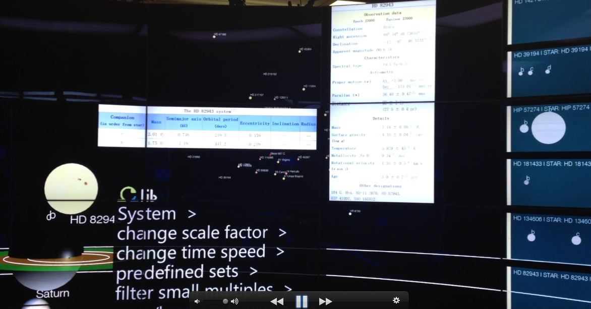
Reordering the Small Multiples
- Use the menu option 'reorder small multiples' to enter ordering mode
- You will see an orange pointer on the wall. Move it around and select a system to order as the female voice guides you, or press Button3 to quit ordering mode. Voice response will let you know if your selection is successful
- Click on where you want the selected system to go, or press Button3 to cancel your selection and back to step 2. Voice response will let you know if ordering is successful.
- Other systems in between of the origin and the destination of the selected system will move accordingly, and you will be back to step 2 to make another ordering again
Hiding the Small Multiples
- Use the menu option 'hide small multiples' to hide all the small multiples when necessary
- Use the menu option 'show small multiples' to restore small multiples
Saving/Loading Configuration
- You can use the menu to save current configuration of small multiples and load them later Note 2: currently 'later' means 'later this time' (i.e. you can only load configuration during the same run)
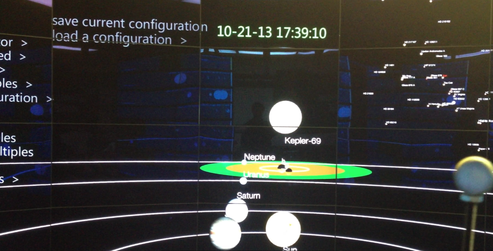
Read Recent Scientific Discoveries
- Use the menu option 'recent discoveries' to read four recent interesting discoveries
- The related system will be brought to the center, and more info about the discovery will be showed
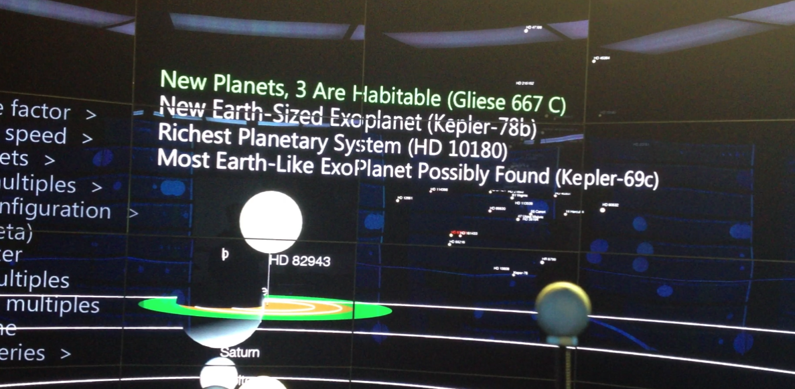